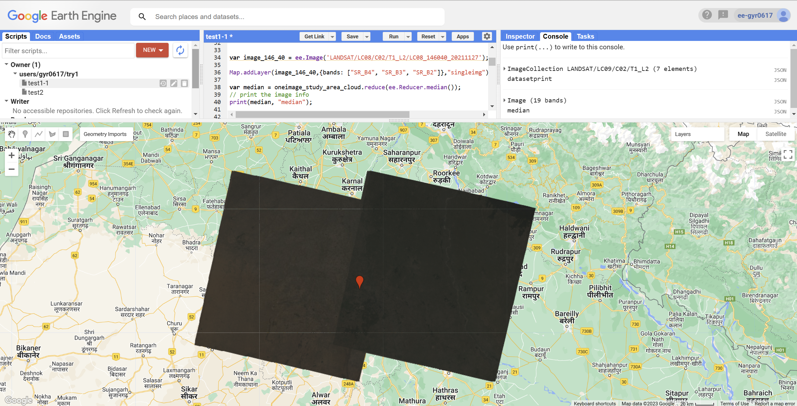
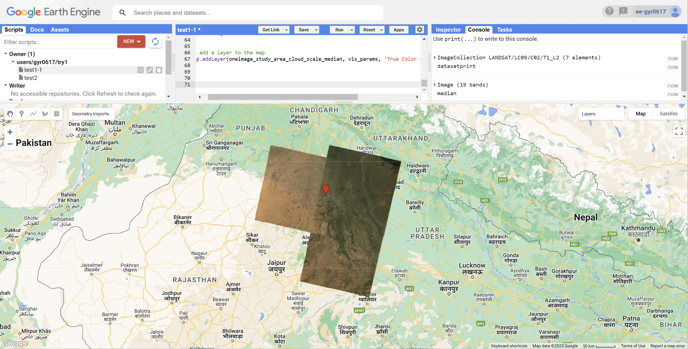
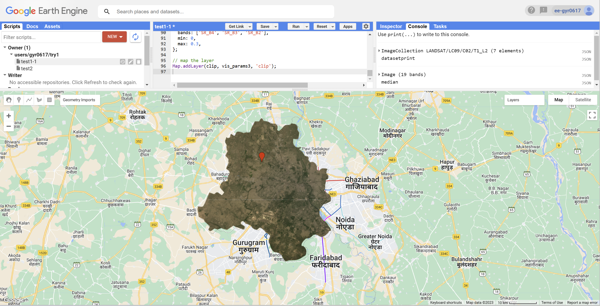

var dataset = ee.ImageCollection('LANDSAT/LC09/C02/T1_L2')
.filterDate('2022-01-01', '2022-02-01');Chapter 5
Summary
What is Google Earth Engine
- Geospatial processing service
- It permits geospatial analysis at scale
- Process massive datasets
- Store data on servers
- Takes the code we have written and applies it for us
Difference in data name
Image-> raster(has bands);Feature-> Vector(has geometry and attributes)
Stack-> Collection

Source:pintrest/codeboxx ### Pratical
Basic
- Load data
- Add it to our map, then the final Landsat 9 here is what the layer will be called on the map.
Map.addLayer(dataset, {bands: ["SR_B4", "SR_B3", "SR_B2"]}, "Landsat 9")- Single images
select a single image from the collection by filtering using the specific date, which you can get from the console window when printing the images within the collection. Landsat (and most other EO datasets) have the date within the file path name.
var oneimage = ee.ImageCollection('LANDSAT/LC09/C02/T1_L2')
.filterDate('2022-04-03', '2022-04-04')
.filterBounds(india); // Intersecting ROI
- Make a function and then calling our collection to the function
// Applies scaling factors in a function
function applyScaleFactors(image) {
var opticalBands = image.select('SR_B.').multiply(0.0000275).add(-0.2);
var thermalBands = image.select('ST_B.*').multiply(0.00341802).add(149.0);
return image.addBands(opticalBands, null, true)
.addBands(thermalBands, null, true);
}
// call our collection to the function and assign it to a new variable
oneimage_study_area_cloud_scale = oneimage_study_area_cloud.map(applyScaleFactors);
// apply the median reducer
var oneimage_study_area_cloud_scale_median = oneimage_study_area_cloud_scale.reduce(ee.Reducer.median());Then we map this result
// set up some of the visualisation paramters
var vis_params = {
bands: ['SR_B4_median', 'SR_B3_median', 'SR_B2_median'],
min: 0.0,
max: 0.3,
};
// add a layer to the map
Map.addLayer(oneimage_study_area_cloud_scale_median, vis_params, 'True Color (432)');- Clip
Clip those images to our current study area, we also used the interactive visulisation box to select my min and max values.
var clip = meanImage.clip(india)
.select(['SR_B1', 'SR_B2', 'SR_B3', 'SR_B4', 'SR_B5', 'SR_B6', 'SR_B7']);
var vis_params3 = {
bands: ['SR_B4', 'SR_B3', 'SR_B2'],
min: 0,
max: 0.3,
};
// map the layer
Map.addLayer(clip, vis_params3, 'clip');

PCA
First method I use:
Source: ZhiHu
//- PCA
// Principal Components Analysis EXAMPLE
// Load a landsat 8 image, select the bands of interest.
var image = ee.Image('LANDSAT/LC08/C02/T1_L2/LC08_146040_20211127')
.select([ 'SR_B3', 'SR_B4', 'SR_B5']);
// Display the input imagery and the region in which to do the PCA.
var region = image.geometry();
Map.centerObject(region, 10);
Map.addLayer(ee.Image().paint(region, 0, 2), {}, 'Region');
Map.addLayer(image, {bands: ['SR_B3', 'SR_B4', 'SR_B5'], min: 0, max: 20000}, 'Original Image');
// Get some information about the input to be used later.
var scale = image.projection().nominalScale();
var bandNames = image.bandNames();
// Mean center the data to enable a faster covariance reducer
// and an SD stretch of the principal components.
var meanDict = image.reduceRegion({
reducer: ee.Reducer.mean(),
geometry: region,
scale: scale,
maxPixels: 1e9
});
var means = ee.Image.constant(meanDict.values(bandNames));
var centered = image.subtract(means);
// This helper function returns a list of new band names.
var getNewBandNames = function(prefix) {
var seq = ee.List.sequence(1, bandNames.length());
return seq.map(function(b) {
return ee.String(prefix).cat(ee.Number(b).int());
});
};
// This function accepts mean centered imagery, a scale and
// a region in which to perform the analysis. It returns the
// Principal Components (PC) in the region as a new image.
// [START principal_components]
var getPrincipalComponents = function(centered, scale, region) {
// Collapse the bands of the image into a 1D array per pixel.
var arrays = centered.toArray();
// Compute the covariance of the bands within the region.
var covar = arrays.reduceRegion({
reducer: ee.Reducer.centeredCovariance(),
geometry: region,
scale: scale,
maxPixels: 1e9
});
// Get the 'array' covariance result and cast to an array.
// This represents the band-to-band covariance within the region.
var covarArray = ee.Array(covar.get('array'));
// Perform an eigen analysis and slice apart the values and vectors.
var eigens = covarArray.eigen();
// This is a P-length vector of Eigenvalues.
var eigenValues = eigens.slice(1, 0, 1);
// This is a PxP matrix with eigenvectors in rows.
var eigenVectors = eigens.slice(1, 1);
// Convert the array image to 2D arrays for matrix computations.
var arrayImage = arrays.toArray(1);
// Left multiply the image array by the matrix of eigenvectors.
var principalComponents = ee.Image(eigenVectors).matrixMultiply(arrayImage);
// Turn the square roots of the Eigenvalues into a P-band image.
var sdImage = ee.Image(eigenValues.sqrt())
.arrayProject([0]).arrayFlatten([getNewBandNames('sd')]);
// Turn the PCs into a P-band image, normalized by SD.
return principalComponents
// Throw out an an unneeded dimension, [[]] -> [].
.arrayProject([0])
// Make the one band array image a multi-band image, [] -> image.
.arrayFlatten([getNewBandNames('pc')])
// Normalize the PCs by their SDs.
.divide(sdImage);
};
// [END principal_components]
// Get the PCs at the specified scale and in the specified region
var pcImage = getPrincipalComponents(centered, scale, region);
// Plot each PC as a new layer
for (var i=0; i
Second method I use:
Source: Andy MacLachlan
////// PCA ////////
var bounds = india.geometry().bounds();
//var clip2 = ee.Image(meanImage_texture)
// scale and band names
var scale = 30;
var bandNames = glcm.bandNames();
var region = india.geometry();
Map.centerObject(region, 10);
Map.addLayer(ee.Image().paint(region, 0, 2), {}, 'Region');
print(region, "india_geometry")
// mean center the data and SD strech the princapal components
// and an SD stretch of the principal components.
var meanDict = glcm.reduceRegion({
reducer: ee.Reducer.mean(),
geometry: region,
scale: scale,
maxPixels: 1e9
});
var means = ee.Image.constant(meanDict.values(bandNames));
var centered = glcm.subtract(means);
// This helper function returns a list of new band names.
var getNewBandNames = function(prefix) {
var seq = ee.List.sequence(1, bandNames.length());
return seq.map(function(b) {
return ee.String(prefix).cat(ee.Number(b).int());
});
};
// This function accepts mean centered imagery, a scale and
// a region in which to perform the analysis. It returns the
// Principal Components (PC) in the region as a new image.
var getPrincipalComponents = function(centered, scale, region) {
// Collapse the bands of the image into a 1D array per pixel.
var arrays = centered.toArray();
// Compute the covariance of the bands within the region.
var covar = arrays.reduceRegion({
reducer: ee.Reducer.centeredCovariance(),
geometry: region,
scale: scale,
maxPixels: 1e9
});
// Get the 'array' covariance result and cast to an array.
// This represents the band-to-band covariance within the region.
var covarArray = ee.Array(covar.get('array'));
// Perform an eigen analysis and slice apart the values and vectors.
var eigens = covarArray.eigen();
// This is a P-length vector of Eigenvalues.
var eigenValues = eigens.slice(1, 0, 1);
// This is a PxP matrix with eigenvectors in rows.
var eigenValuesList = eigenValues.toList().flatten()
var total = eigenValuesList.reduce(ee.Reducer.sum())
var percentageVariance = eigenValuesList.map(function(item) {
return (ee.Number(item).divide(total)).multiply(100).format('%.2f')
})
print("percentageVariance", percentageVariance)
var eigenVectors = eigens.slice(1, 1);
// Convert the array image to 2D arrays for matrix computations.
var arrayImage = arrays.toArray(1);
// Left multiply the image array by the matrix of eigenvectors.
var principalComponents = ee.Image(eigenVectors).matrixMultiply(arrayImage);
// Turn the square roots of the Eigenvalues into a P-band image.
var sdImage = ee.Image(eigenValues.sqrt())
.arrayProject([0]).arrayFlatten([getNewBandNames('sd')]);
// Turn the PCs into a P-band image, normalized by SD.
return principalComponents
// Throw out an an unneeded dimension, [[]] -> [].
.arrayProject([0])
// Make the one band array image a multi-band image, [] -> image.
.arrayFlatten([getNewBandNames('pc')])
// Normalize the PCs by their SDs.
.divide(sdImage);
};
// Get the PCs at the specified scale and in the specified region
var pcImage = getPrincipalComponents(centered, scale, region);
// Plot each PC as a new layer
//for (var i = 0; i < bandNames.length().getInfo(); i++) {
// var band = pcImage.bandNames().get(i).getInfo();
// Map.addLayer(pcImage.select([band]), {min: -2, max: 2}, band);
//}
Map.addLayer(pcImage, {bands: ['pc2', 'pc1'], min: -2, max: 2}, 'PCA bands 1 and 2');
//// EXPORT///////
var PCA_out = pcImage.select(['pc1', 'pc2'])
//var PCA_out_single_image = PCA_out.toBands();
print(PCA_out, "PCA_output")
//Map.addLayer(PCA_out, {bands: ['pc2', 'pc1'], min: -2, max: 2}, 'PCA bands 1 and 2_out');
var projection = PCA_out.select('pc1').projection().getInfo();
print(projection, "output_projection")
var bounds = india.geometry();
// Export the image, specifying the CRS, transform, and region.
Export.image.toDrive({
image: PCA_out,
description: 'PCA_india',
scale:30,
crs: projection.crs,
maxPixels: 100E10,
region: bounds
});
Difference in these two methods
- The first code, the Landsat 8 imagery is preprocessed to create a composite of the median pixel values
for each band, which is then used to compute the PCA. In the second code, the GLCM texture matrix is
computed directly from the Landsat 8 imagery, and then mean-centered and standardized before PCA is computed.
Application
Reflection